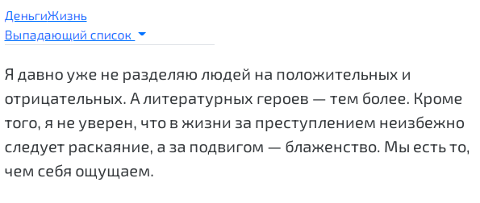

Кажется, впервые табы использовали на Amazon в 1995 году и с тех пор так или иначе табы встречаются в повседневной жизни любого пользователя интернетов. До появления Bootstrap создавать табы было не то, чтобы сложно, но довольно затратно по времени. Теперь, чтобы создать динамическую навигацию на табах, достаточно осилить этот урок. Поехали!
Bootstrap поддерживает любое количество вкладок, в т.ч. выпадающие меню. Вложенные вкладки не поддерживаются.

Каждый набор вкладок нужно активировать через JavaScript таким образом:
$('#my-tabs a').click(function (e) {
e.preventDefault()
$(this).tab('show')
})
Чтобы показать определённую вкладку пользуйтесь таким методом:
$('#my-tabs a[href="#life"]').tab('show') // селектор по имени
$('#my-tabs a:first').tab('show') // выбор первой вкладки
$('#my-tabs a:last').tab('show') // последняя вкладка
$('#my-tabs li:eq(2) a').tab('show') // выбор вкладки по номеру
Обратите внимание на последнюю строку кода: нумерация вкладок начинается с нуля, поэтому третья вкладка будет иметь индекс 2.
Вы можете обойтись без JS: для того, чтобы табы начали работать, достаточно добавить атрибут data-toggle="tab" или data-toggle="pill" элементам. Смотрите пример, чтобы стало понятнее.
Классы .nav и .nav-tabs, которые добавляются к элементу списка ul добавляют ему стили вкладок Bootstrap. А классы .nav и .nav-pills используют стили кнопок.
<div>
<!-- Навигация -->
<ul class="nav nav-tabs" role="tablist">
<li class="active"><a href="#home" aria-controls="home" role="tab" data-toggle="tab">Домой</a></li>
<li><a href="#profile" aria-controls="profile" role="tab" data-toggle="tab">Профиль</a></li>
<li><a href="#messages" aria-controls="messages" role="tab" data-toggle="tab">Сообщения</a></li>
<li><a href="#settings" aria-controls="settings" role="tab" data-toggle="tab">Настройки</a></li>
</ul>
<!-- Содержимое вкладок -->
<div class="tab-content">
<div role="tabpanel" class="tab-pane active" id="home">...</div>
<div role="tabpanel" class="tab-pane" id="profile">...</div>
<div role="tabpanel" class="tab-pane" id="messages">...</div>
<div role="tabpanel" class="tab-pane" id="settings">...</div>
</div>
</div>
Чтобы вкладки менялись не моментально, а плавно, добавьте класс .fade к каждому элементу с классом .tab-pane. Первая вкладка должна иметь также класс .in, чтобы её содержимое было видимым при загрузке страницы.
<div class="tab-content"> <div role="tabpanel" class="tab-pane fade in active" id="home">...</div> <div role="tabpanel" class="tab-pane fade" id="profile">...</div> <div role="tabpanel" class="tab-pane fade" id="messages">...</div> <div role="tabpanel" class="tab-pane fade" id="settings">...</div> </div>
Активирует вкладку и контейнер для содержимого. Вкладка должна иметь либо атрибут data-target, либо href, который бы указывал на селектор контейнера на странице. В примерах выше все вкладки сделаны при помощи ссылок <a> с атрибутами data-toggle="tab".
Меняет вкладку на указанную и отображает её содержимое. Любые другие вкладки становятся неактивными, а их содержание прячется.
$('#tab-01').tab('show')
Часто бывает необходимым выполнять те или иные действия по смене вкладок. В этом нам помогают их события. При показе новой вкладки события происходят в таком порядке:
hide.bs.tab — на текущей вкладкеshow.bs.tab — на той, которая должна отобразитьсяhidden.bs.tab — на той же вкладке, что и hide.bs.tabshown.bs.tab — на только что показанной вкладке, той же, что в событии show.bs.tabЕсли до этого ни одна из вкладок не была активна, то события hide.bs.tab и hidden.bs.tab не произойдут.
| Событие | Описание |
|---|---|
show.bs.tab |
Событие происходит при показе вкладки, но до того, как она становится видимой. Переменные event.target и event.relatedTarget указывают на активную вкладку и на ту, которая была активна ранее (если таковая имеется). |
shown.bs.tab |
Аналогично первому событию, это срабатывает при показе вкладки, но уже после того, как она полностью становится видимой. Переменные event.target и event.relatedTarget указывают на активную вкладку и на предыдущую активную. |
hide.bs.tab |
Срабатывает перед показом новой вкладки (и перед скрытием предыдущей активной). event.target и event.relatedTarget укажут на текущую активную вкладку и ту, которая скоро станет активной. |
hidden.bs.tab |
Срабатывает после того, как новая вкладка стала активной, а предыдущая активная стала скрытой. event.target и event.relatedTarget содержат ссылки на предыдущую активную и текущую активную вкладки. |
$('a[data-toggle="tab"]').on('shown.bs.tab', function (e) {
e.target // вкладка, которая стала активной
e.relatedTarget // предыдущая активная вкладка
})